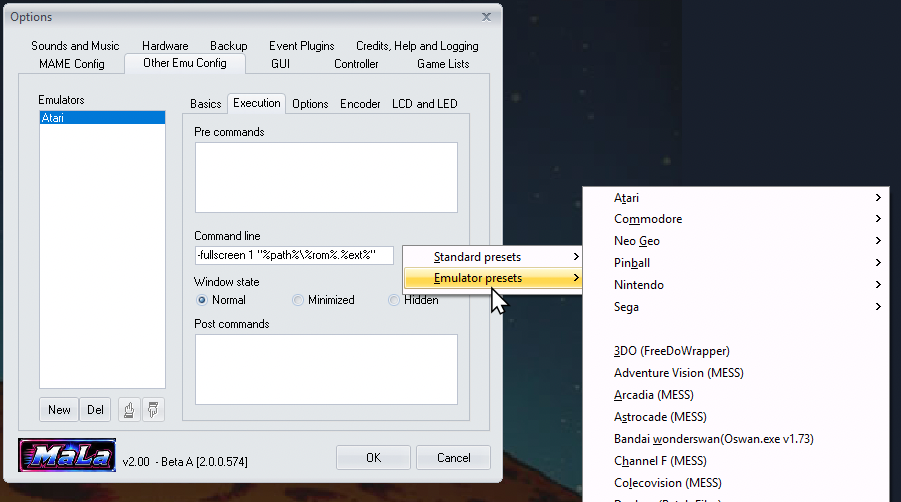

Emulator Presets
MaLa can launch any command-line-based emulator, but every emulator expects its own command-line syntax — different switches, different quoting, different argument order. Emulator presets remove that guesswork: pick your emulator from a built-in list and MaLa fills in the correct command line for you, for the systems below.

Example
Say you want to add Atari 2600 support using the Stella emulator. In MaLa Options → Other Emu Config, add a new emulator called "Atari", switch to the Execution tab, right-click the Command line box, and choose Emulator presets → Atari → Atari 2600 (Stella). MaLa fills in the Command line box for you:
-fullscreen 1 "%path%\%rom%.%ext%"
%path%, %rom% and %ext% are placeholders MaLa substitutes automatically for whichever game you launch — you never type these yourself, and the same preset works for every ROM in that system's game list. Pick a different emulator instead of Stella and you'd get a completely different command line, matching that emulator's own syntax — that's the whole point of a preset.
The following systems and emulators have a built-in preset:
Atari
- Atari 2600 (Z26)
- Atari 2600 (Stella)
- Atari 5200 (Jum52)
- Atari 5200 (MESS)
- Atari 7800 (MESS)
- Atari 800XL (Atari800)
- Atari Jaguar (VirtualJaguar)
- Atari Lynx (Handy)
Commodore
- Commodore Amiga (WinUAE)
Nintendo
- Gameboy (VisualBoyAdvance)
- Gameboy Advance (VisualBoyAdvance)
- Gameboy Color (VisualBoyAdvance)
- Nintendo (FceUltra)
- Nintendo (Nestopia)
- Nintendo (Mesen)
- Nintendo 64 (Project64)
- Nintendo 64 (Mupen64Plus)
- Nintendo DS (DeSmuME)
- Nintendo DS (melonDS)
- Nintendo GameCube (Dolphin)
- Nintendo Wii (Dolphin)
- Super Nintendo (ZSNESW)
- Super Nintendo (Snes9x)
- Virtual Boy (RealityBoy)
Sega
- Sega 32X (Fusion)
- Sega CD (Fusion)
- Sega Dreamcast (Chankast)
- Sega Dreamcast (NullDC)
- Sega Dreamcast (Flycast)
- Sega Dreamcast (Redream)
- Sega Game Gear (Fusion)
- Sega Genesis (Fusion)
- Sega Master System (Fusion)
- Sega SC-3000 (Fusion)
- Sega SG-1000 (Fusion)
- Sega Saturn (Mednafen)
Sony
- Sony PlayStation (ePSXe)
- Sony PlayStation (DuckStation)
- Sony PlayStation 2 (PCSX2)
- Sony PSP (PPSSPP)
Other Consoles & Handhelds
- 3DO (FreeDoWrapper)
- Adventure Vision (MESS)
- Arcadia (MESS)
- Astrocade (MESS)
- Bandai WonderSwan (Oswan)
- Channel F (MESS)
- Colecovision (MESS)
- Intellivision (Nostalgia)
- Neo Geo Pocket Color (NeoPop)
- Neo Geo Pocket Mono (NeoPop)
- Odyssey 2 (O2EM)
- PC Engine / TurboGrafx-16 (Magic Engine)
- Supervision (MESS)
- Vectrex (MESS)
Pinball
- Future Pinball
- Visual Pinball
PC, Multi-System & Laserdisc
- Daphne (Batch)
- DOSBox
- DOSBox-X
- Passigar Scumm (Batch)
- RetroArch (edit -L core)
- ScummVM
- Zinc (Howard Casto Wrapper)